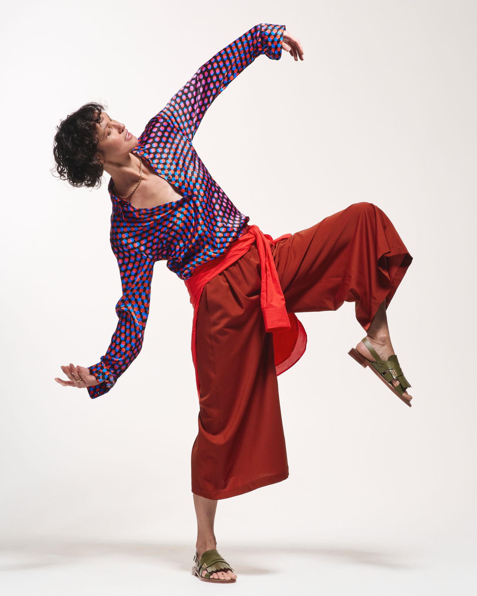
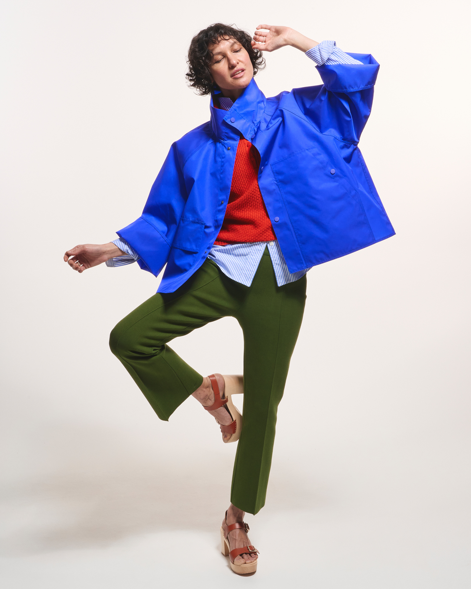
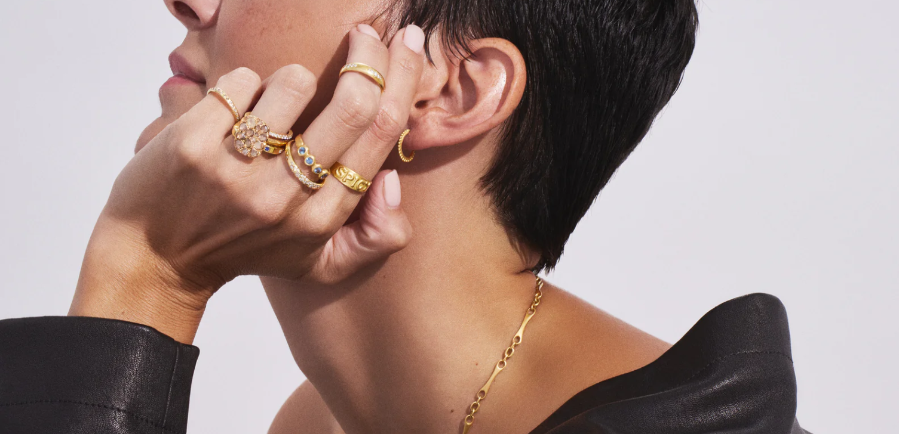
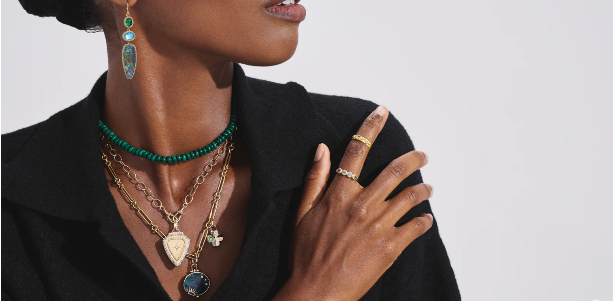

Creative production, styling support, merchandising, and visual storytelling developed through hands-on experience in luxury retail and campaign production.
A vibrant editorial concept focused on color, contrast, and playful luxury styling.


Editorial imagery highlighting texture, craftsmanship, and modern luxury through elevated jewelry styling and close-detail composition.


Visual storytelling centered around the in-store experience, merchandising presentation, and the atmosphere of luxury retail.